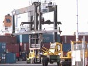

| О ФИРМЕ |

Экспедиторская компания "Праймтранспорт" организует транспортно-экспедиторское обслуживание различных экспортно-импортных грузопотоков на морском, речном, железнодорожном и/или автомобильном транспорте.
Благодаря многолетнему опыту работы на рынке транспортно-экспедиторских услуг мы обеспечиваем высокое качество обслуживания всех видов генеральных, насыпных и наливных грузов, а также грузов в контейнерах во всех черноморских портах Украины. Мы можем предложить нашим клиентам оптимальные схемы перевозок внешнеторговых грузов, исходя из контрактных условий и текущих потребностей, включая перевозки по схеме "от двери до двери".